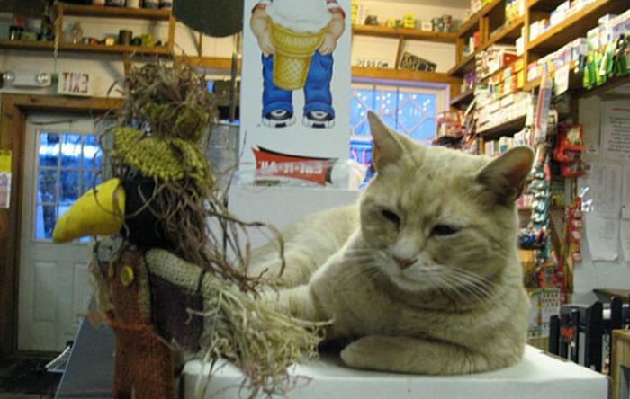
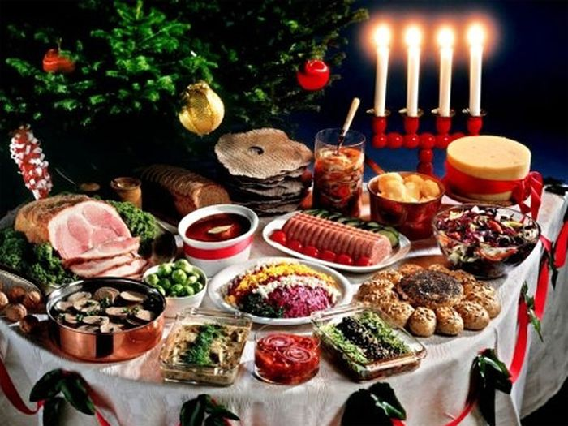
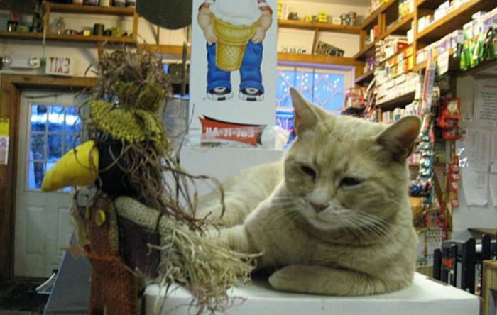
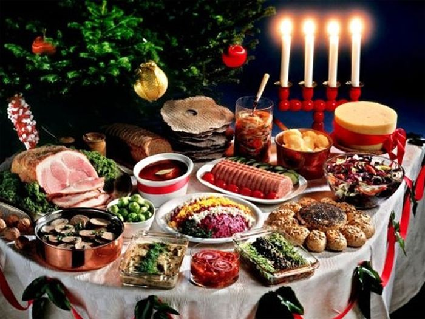
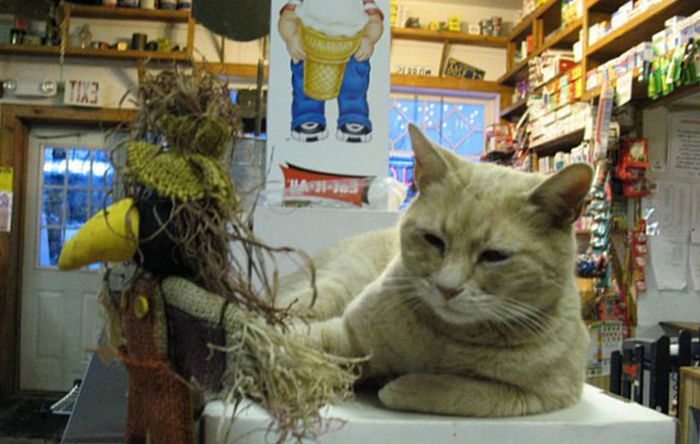
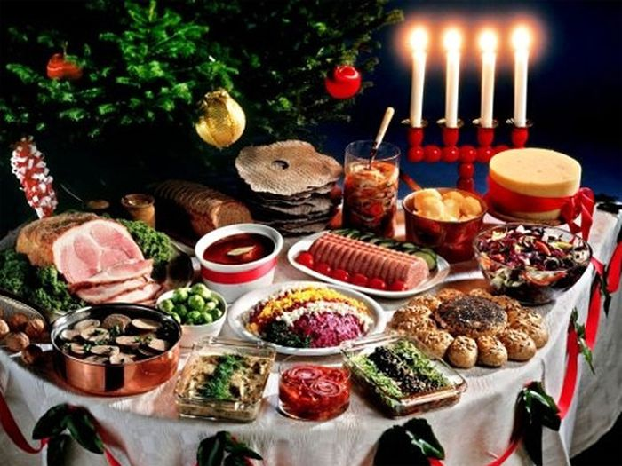
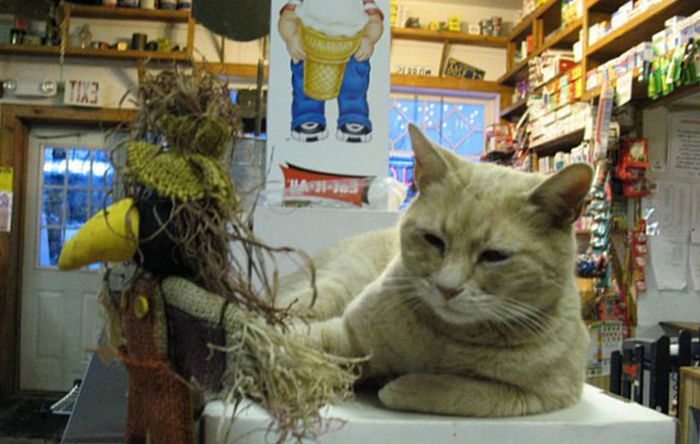
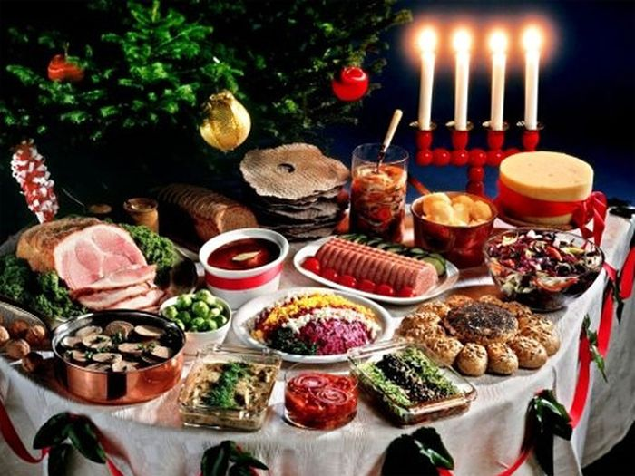

В апреле 1896 года в Афинах прошли первые Олимпийские игры современности. Таким образом, в этом году мы отмечаем 120-летний юбилей со дня возрождения олимпийского движения. За это время в программу соревнований входили самые необычные дисциплины.
Беспорядки на трибунах стали, к сожалению, обычным явлением в футболе. Дракам между фанатами иногда уделяют внимания в СМИ больше, чем самому матчу. А вот самая крупная трагедия в истории мирового футбола произошла 24 мая 1964 года. Причиной гибели сотен болельщиков стал всего-навсего…
Узнать курс современного российского рубля совсем не сложно, эти сведения можно получить где угодно: в Интернете, газетах, по телевидению. А каким был курс нашей валюты, например, 100 лет назад? Нужно заметить, что перед началом Первой мировой войны в 1914 году российский рубль был одной из самых стабильных валют мира.
Однажды, некая Лори Стек, владелица магазина в небольшом городке Талкитна, расположенного на Аляске, подобрала на улице бездомного котенка. Лори назвала его Стаббс (куцый хвост), так как за время бродяжничества котенок лишился своего хвоста. Поселившись в магазине своей новой хозяйки, Стаббс быстро стал любимцем покупателей, обладая веселым и добродушным нравом.
Так получилось, что главными украшениями новогоднего стола в России являются: шампанское, мандарины и салат «Оливье». Прямо скажем, продукты не самого русского происхождения, но представить без них праздничный стол просто невозможно. А что едят на Новый год в других странах мира?